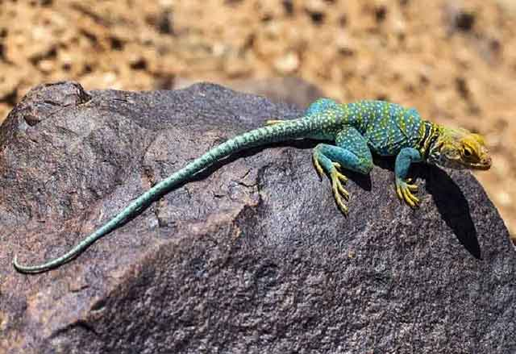

도마뱀 꼬리가 잘려도 괜찮을까?
뉴스 헤드라인을 보면 가끔 정치인의 행동을 보고 '꼬리 자르기'라는 표현을 합니다. 꼬리를 자른다는 건 도마뱀이 위험한 순간이 닥치면 꼬리를 자르고 도망치는 것을 비유해서 하는 말인데요. 말은 쉽게 하지만, 실제로 상상해 보면 아주 안타까운 일이 아닐 수 없죠. 자신의 꼬리를 자른다니! 쉽지 않은 일이지만, 도마뱀은 위험한 순간 그 일을 해냅니다. 도마뱀, 꼬리가 잘려도 괜찮은 걸까요?
"도마뱀의 능력"
도마뱀의 몇 가지 특징을 꼽자면 그중 하나가 바로 '큰 눈'입니다. 체구에 비해 큼지막한 눈이 돋보이죠. 도마뱀이 이렇게 큰 눈을 가지고 있는 데는 이유가 있습니다. 적을 빨리 판단할 수 있게 만들어진 구조죠. 후각도 아주 발달해 있는 편입니다. 대부분 종이 비슷한 능력을 갖추고 있지만, 그중에서도 '코모도왕도마뱀'은 10km 떨어진 곳에 있는 고기 냄새도 맡을 수 있다고 합니다. 엄청나게 뛰어난 후각이죠.
보통 이런 능력이 뛰어난 이유는 대게 약하기 때문입니다. 약하다면 공격하기보다는 잘 피하는 것이 중요하겠죠. 그래서 도마뱀은 생존을 위해 잘 피할 수 있는 능력을 갖추며 진화한 것입니다.
"생존을 위한 또 다른 능력"
360도로 돌아가는 눈, 최대 10km 맡을 수 있는 후각 그리고 자신의 꼬리를 스스로 자르고 도망갈 수 있는 '자절' 능력도 있습니다. 도마뱀은 천적을 만나면 꼬리를 자르고 도망갑니다. 잘린 꼬리는 가만히 있는 것이 아닌 마치 살아있는 도마뱀처럼 꼬리가 움직이기도 합니다. 그 사이 도마뱀의 몸은 재빨리 천적의 눈에서 사라집니다.
"단 한 번 가능한 능력"
도마뱀의 꼬리 자르기 능력은 생존을 위한 영리한 방법이지만, 그렇다고 이 능력을 무한대로 사용할 수는 없습니다. 정말 위급한 순간에 자신의 목숨을 잘리기 위해 '평생 단 한 번'만 사용할 수 있는 능력입니다. 어쩌면 살기 위한 처절한 몸부림처럼 느껴지기도 합니다.
"꼬리가 잘린 뒤"
꼬리가 잘린 뒤에는 다시 꼬리를 재생합니다. 하지만 이전처럼 똑같은 모양, 색으로 자라지는 않습니다. 신체 일부를 재생해야 하는 데 많은 에너지가 소비되기 때문입니다. 또한, 꼬리를 재생하는 데 에너지를 쏟게 되면서 꼬리 외에 신체에 성장은 멈추게 됩니다. 당연히 균형 있는 성장이 어려워지고 결국 천적과 다시 만나게 될 가능성이 커집니다.
"모든 도마뱀이 가능한 일일까?"
안타깝게도 모든 도마뱀이 '꼬리 자르기' 능력을 갖추고 있는 것은 아닙니다. 총 16개 과로 나뉜 도마뱀 중 11개의 과만 꼬리를 자를 수 있고, 또 이 중에서 일부만이 재생할 수 있습니다.
겉으로 보면 뛰어난 능력처럼 보이지만, 도마뱀 꼬리가 잘린 뒤 그 이후의 삶을 생각해 보면 그리 좋은 것만은 아닌 것 같습니다.
[출처] 도마뱀 꼬리가 잘려도 괜찮을까? ｜ 작성자 땡순냥이